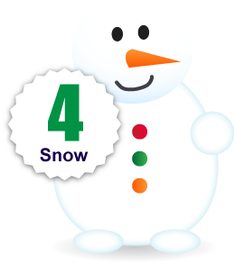
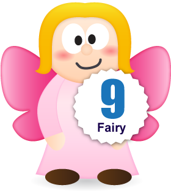

Studying the amount of positive Tweets about the build up to Christmas, it seems that 17-19 year olds are by far the most excited, but there’s still lots of excited middle aged people too. The results are based on Tweets for the 2 weeks leading up to Christmas Day.
Santa claus is coming to town!
O Christmas Tree
 Lights
Lights

Let it snow, let it snow, let it snow!
Decorations
Santa's little helpers
Reindeer
Bell

Fairy
Sleigh
This Top 10 list of cliche Christmassy things, was found from all positive mentions of them. Some of these characters are the kinds of things that are in the movies, that really get us excited, and make Christmas magic. So many people talk about snow around christmas time, even though we all know there’s very little chance of a white Christmas. People are not talking so much about festive food, with Turkey being number 11, Christmas Pudding number 14, and Sprouts being number 22 on the list, but we know food will be more of a subject matter on Christmas day.